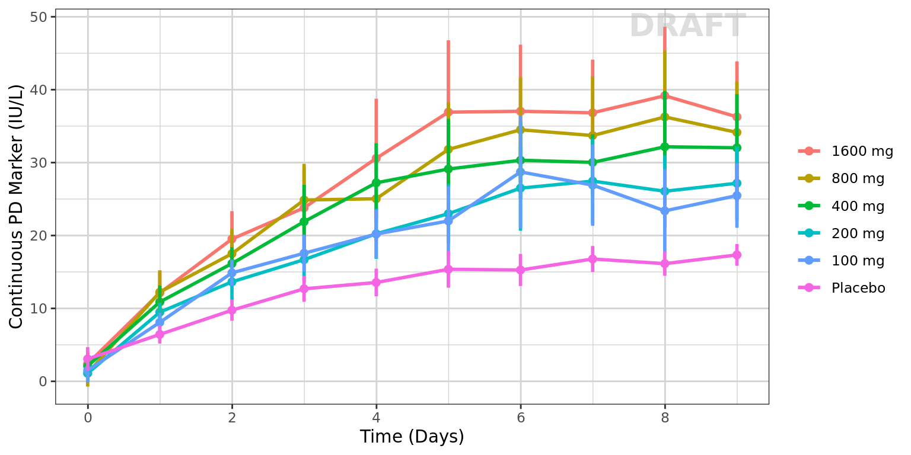
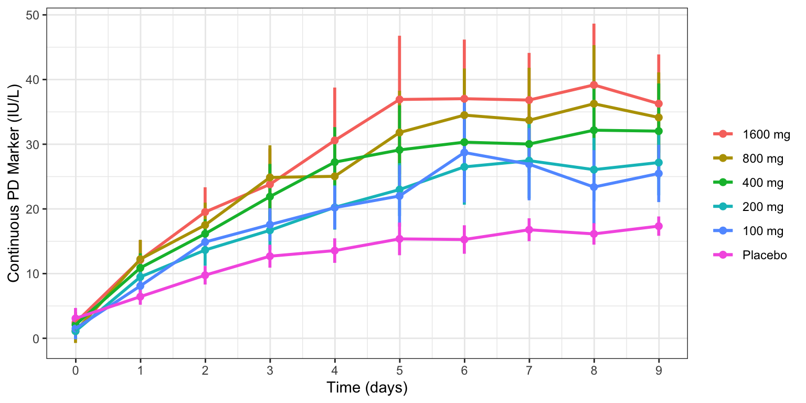
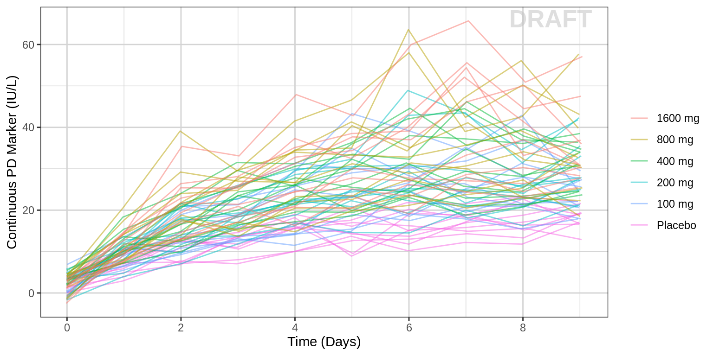
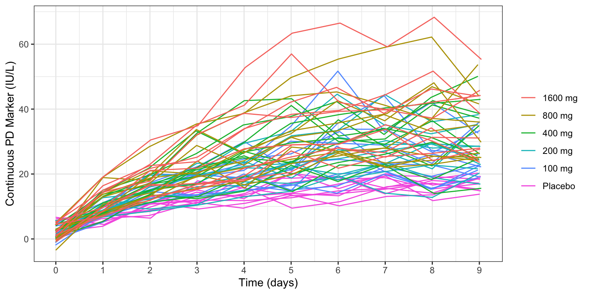
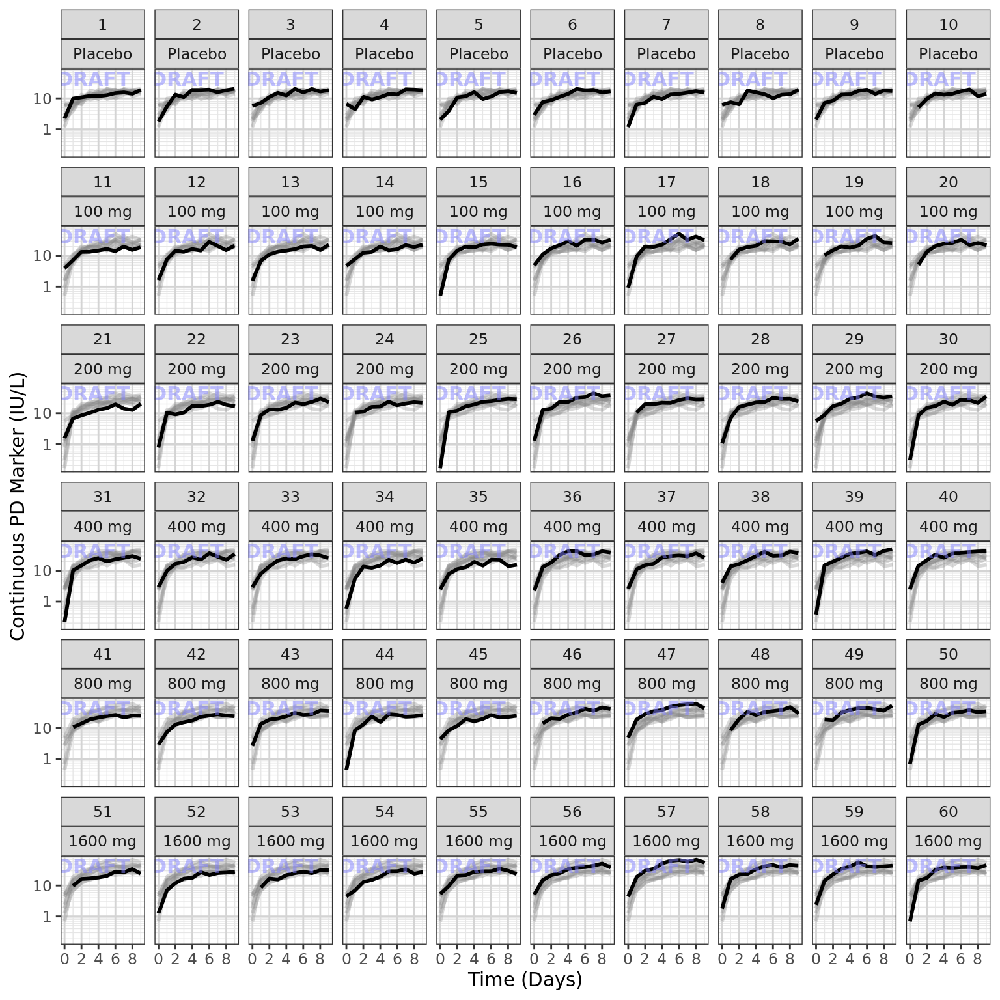
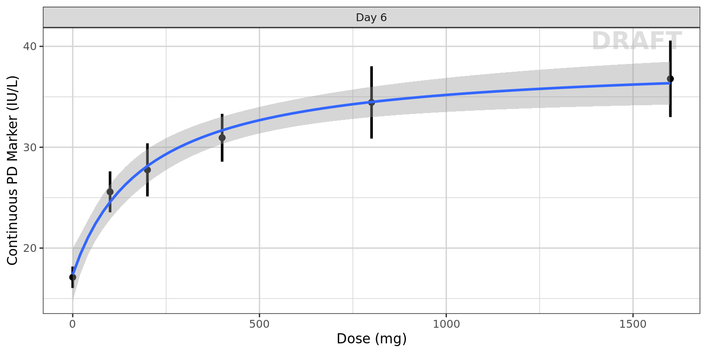
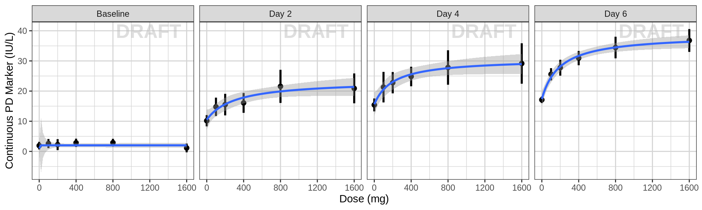
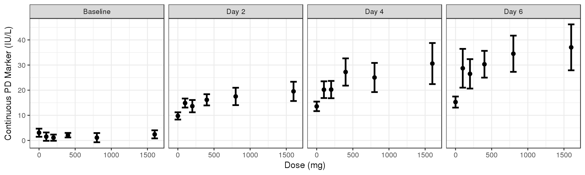

This document contains exploratory plots for multiple ascending continuous PD data as well as the R code that generates these graphs. The plots presented here are based on simulated data (see: PKPD Datasets). Data specifications can be accessed on Datasets and Rmarkdown template to generate this page can be found on Rmarkdown-Template. You may also download the Multiple Ascending Dose PK/PD dataset for your reference (download dataset).
library(ggplot2)
library(dplyr)
library(tidyr)
library(gridExtra)
library(xgxr)
#flag for labeling figures as draft
status = "DRAFT"
## ggplot settings
xgx_theme_set()
#directories for saving individual graphs
dirs = list(
parent_dir = tempdir(),
rscript_dir = "./",
rscript_name = "Example.R",
results_dir = "./",
filename_prefix = "",
filename = "Example.png")#load dataset
pkpd_data <- read.csv("../Data/Multiple_Ascending_Dose_Dataset2.csv")
DOSE_CMT = 1
PD_CMT = 3
SS_PROFDAY = 6 # steady state prof day
PD_PROFDAYS = c(0, 2, 4, 6)
#ensure dataset has all the necessary columns
pkpd_data = pkpd_data %>%
mutate(ID = ID, #ID column
TIME = TIME, #TIME column name
NOMTIME = NOMTIME, #NOMINAL TIME column name
PROFDAY = case_when(
NOMTIME < (SS_PROFDAY - 1)*24 ~ 1 + floor(NOMTIME / 24),
NOMTIME >= (SS_PROFDAY - 1)*24 ~ SS_PROFDAY
), #PROFILE DAY day associated with profile, e.g. day of dose administration
LIDV = LIDV, #DEPENDENT VARIABLE column name
CENS = CENS, #CENSORING column name
CMT = CMT, #COMPARTMENT column
DOSE = DOSE, #DOSE column here (numeric value)
TRTACT = TRTACT, #DOSE REGIMEN column here (character, with units),
LIDV_UNIT = EVENTU,
DAY_label = ifelse(PROFDAY > 0, paste("Day", PROFDAY), "Baseline")
)
#create a factor for the treatment variable for plotting
pkpd_data = pkpd_data %>%
arrange(DOSE) %>%
mutate(TRTACT_low2high = factor(TRTACT, levels = unique(TRTACT)),
TRTACT_high2low = factor(TRTACT, levels = rev(unique(TRTACT))))
#create pd dataset
pd_data <- pkpd_data %>%
filter(CMT == PD_CMT)
#units and labels
time_units_dataset = "hours"
time_units_plot = "days"
trtact_label = "Dose"
dose_units = unique((pkpd_data %>% filter(CMT == DOSE_CMT))$LIDV_UNIT) %>% as.character()
dose_label = paste0("Dose (", dose_units, ")")
pd_units = unique(pd_data$LIDV_UNIT) %>% as.character()
pd_label = paste0("Continuous PD Marker (", pd_units, ")") Summarize the data in a way that is easy to visualize the general trend of PD over time and between doses. Using summary statistics can be helpful, e.g. Mean +/- SE, or median, 5th & 95th percentiles. Consider either coloring by dose or faceting by dose. Depending on the amount of data one graph may be better than the other.
When looking at summaries of continuous PD over time, there are several things to observe. Note the number of doses and number of time points or sampling schedule. Observe the overall shape of the average profiles. How does the profile change over time? Does the effect appear to increase and decrease quickly on a short time scale, or does is occur over a longer time scale? Is there clear separation between the profiles for different doses? Does the effect appear to increase with increasing dose? Do you detect a saturation of the effect?
#PD data
gg <- ggplot(data = pd_data,
aes(x = NOMTIME, y = LIDV, color = TRTACT_high2low, fill = TRTACT_high2low))
gg <- gg + xgx_stat_ci(conf_level = .95, position = position_dodge(width = 12), alpha = 0.5)
gg <- gg + xgx_scale_x_time_units(units_dataset = time_units_dataset,
units_plot = time_units_plot)
gg <- gg + guides(color = guide_legend(""), fill = guide_legend(""))
gg <- gg + labs(y = pd_label)
gg <- gg + xgx_annotate_status(status)
#if saving copy of figure, replace xgx_annotate lines with xgx_save() shown below:
#xgx_save(width, height, dirs, "filename_main", status)
print(gg)
gg <- ggplot(data = pd_data,
aes(x = NOMTIME, y = LIDV))
gg <- gg + xgx_stat_ci(conf_level = .95)
gg <- gg + xgx_scale_x_time_units(units_dataset = time_units_dataset,
units_plot = time_units_plot)
gg <- gg + facet_grid(~TRTACT_low2high)
gg <- gg + guides(color = guide_legend(""), fill = guide_legend(""))
gg <- gg + scale_y_continuous()
gg <- gg + labs(y = pd_label)
gg <- gg + xgx_annotate_status(status)
#if saving copy of figure, replace xgx_annotate lines with xgx_save() shown below:
#xgx_save(width, height, dirs, "filename_main", status)
print(gg)
Use spaghetti plots to visualize the extent of variability between individuals. The wider the spread of the profiles, the higher the between subject variability. Distinguish different doses by color, or separate into different panels. If coloring by dose, do the individuals in the different dose groups overlap across doses? Dose there seem to be more variability at higher or lower concentrations?
gg <- ggplot(data = pd_data,
aes(x = TIME, y = LIDV, group = ID, color = factor(TRTACT_high2low)))
gg <- gg + geom_line(alpha = 0.5)
gg <- gg + guides(color = guide_legend(""), fill = guide_legend(""))
gg <- gg + xgx_scale_x_time_units(units_dataset = time_units_dataset,
units_plot = time_units_plot)
gg <- gg + labs(y = pd_label)
gg <- gg + xgx_annotate_status(status)
#if saving copy of figure, replace xgx_annotate lines with xgx_save() shown below:
#xgx_save(width, height, dirs, "filename_main", status)
print(gg)
gg <- ggplot(data = pd_data,
aes(x = TIME, y = LIDV, group = ID))
gg <- gg + geom_line(alpha = 0.5)
gg <- gg + geom_point(alpha = 0.5)
gg <- gg + guides(color = guide_legend(""), fill = guide_legend(""))
gg <- gg + xgx_scale_x_time_units(units_dataset = time_units_dataset,
units_plot = time_units_plot)
gg <- gg + facet_grid(~TRTACT_low2high)
gg <- gg + labs(y = pd_label)
gg <- gg + xgx_annotate_status(status)
#if saving copy of figure, replace xgx_annotate lines with xgx_save() shown below:
#xgx_save(width, height, dirs, "filename_main", status)
print(gg)
Plot individual profiles in order to inspect them for any irregularities. Inspect the profiles for outlying data points that may skew results or bias conclusions.
Plotting individual profiles on top of gray spaghetti plots puts individual profiles into context, and may help identify outlying individuals for further inspection.
pd_data_rep_by_trt <- list()
for(id in unique(pd_data$ID)){
indiv_data <- pd_data %>% subset(ID == id)
itrtact = unique(indiv_data$TRTACT_low2high)
pd_data_rep_by_trt[[as.character(id)]] <- pd_data %>%
subset(TRTACT_low2high == itrtact) %>%
mutate(ID_rep_by_trt = ID, ID = id)
}
pd_data_rep_by_trt <- bind_rows(pd_data_rep_by_trt)
gg <- ggplot(mapping = aes(x = TIME, y = LIDV))
gg <- gg + geom_line(data = pd_data_rep_by_trt,
aes(group = ID_rep_by_trt),
size = 1, color = rgb(0.5, 0.5, 0.5), alpha = 0.3)
gg <- gg + geom_line(data = pd_data,
aes(group = ID), size = 1)
gg <- gg + xgx_scale_y_log10()
gg <- gg + xgx_scale_x_time_units(units_dataset = time_units_dataset,
units_plot = time_units_plot)
gg <- gg + labs(y = pd_label)
gg <- gg + theme(legend.position = "none")
gg <- gg + theme(panel.grid.minor.x = ggplot2::element_line(color = rgb(0.9, 0.9, 0.9)),
panel.grid.minor.y = ggplot2::element_line(color = rgb(0.9, 0.9, 0.9)))
gg <- gg + facet_wrap(~ID + TRTACT_low2high,
ncol = 10)
gg <- gg + xgx_annotate_status(status, fontsize = 4, color = rgb(0.5, 0.5, 1))
print(gg)
Stratify by covariates of interest to explore whether any key covariates impact response. For examples of plots and code startifying by covariate, see Single Ascending Dose Covariate Section
Warning Be careful of interpreting covariate effects on PD. Covariate effects on PD could be the result of covariate effects on PK transfering to PD through the PK/PD relationship.
One of the key questions when looking at PD markers is to determine if there is a dose-response relationship, and if there is, what dose is necessary to achieve the desired effect? Simple dose-response plots can give insight into these questions.
Plot PD marker against dose. Using summary statistics can be helpful, e.g. Mean +/- SE, or median, 5th & 95th percentiles.
Here are some questions to ask yourself when looking at Dose-Response plots: Do you see any relationship? Does response increase (decrease) with increasing dose? Are you able to detect a plateau or emax (emin) on the effect? If so, around what dose does this occur?
Warning: Even if you don’t see an Emax, that doesn’t mean there isn’t one. Be very careful about using linear models for Dose-Response relationships. Extrapolation outside of the observed dose range could indicate a higher dose is always better (even if it isn’t).
pd_data_to_plot <- pd_data %>% subset(PROFDAY %in% c(SS_PROFDAY))
gg <- ggplot(data = pd_data_to_plot, aes(x = DOSE, y = LIDV))
gg <- gg + xgx_stat_ci(conf_level = .95, geom = list("point","errorbar"))
gg <- gg + xgx_geom_smooth_emax()
gg <- gg + guides(color = guide_legend(""), fill = guide_legend(""))
gg <- gg + facet_grid(~DAY_label)
gg <- gg + labs(x = dose_label, y = pd_label)
gg <- gg + scale_x_continuous(breaks = unique(pd_data_to_plot$DOSE))
gg <- gg + xgx_annotate_status(status)
#if saving copy of figure, replace xgx_annotate lines with xgx_save() shown below:
#xgx_save(width, height, dirs, "filename_main", status)
print(gg)
Sometimes the crossectional Dose-Response curve which looks only at one timepoint defined in the protocol can obscure certain characteristics of the dose-response relationship. For example, if the response variable is much delayed compared to PK the maximal PD effect could occur much later than steady state PK is achieved. Looking only at the defined clinical endpoint has the potential miss this, especially in early clinical trials before the time course of the effect has been characterized. Looking at longitudinal PD over time (as in previous sections above) can help to uncover these trends. It may also be helpful to plot the cross-sectional Dose-Response curves for different time points throughout the study.
pd_data_to_plot <- pd_data %>% subset(PROFDAY %in% PD_PROFDAYS)
gg <- ggplot(data = pd_data_to_plot, aes(x = DOSE, y = LIDV))
gg <- gg + xgx_stat_ci(conf_level = .95, geom = list("point","errorbar"))
gg <- gg + xgx_geom_smooth_emax()
gg <- gg + guides(color = guide_legend(""), fill = guide_legend(""))
gg <- gg + facet_grid(~DAY_label)
gg <- gg + labs(x = dose_label, y = pd_label)
gg <- gg + scale_x_continuous(breaks = seq(0, 1600, 400))
gg <- gg + xgx_annotate_status(status)
#if saving copy of figure, replace xgx_annotate lines with xgx_save() shown below:
#xgx_save(width, height, dirs, "filename_main", status)
print(gg)
pd_data_to_plot <- pd_data %>% subset(PROFDAY %in% c(0, SS_PROFDAY))
gg <- ggplot(data = pd_data_to_plot, aes(x = DOSE , y = LIDV, color = SEX))
gg <- gg + xgx_stat_ci(conf_level = .95, position = position_dodge(width = 100))
gg <- gg + guides(color = guide_legend(""), fill = guide_legend(""))
gg <- gg + facet_grid(~DAY_label)
gg <- gg + labs(x = dose_label, y = pd_label)
gg <- gg + scale_x_continuous(breaks = seq(0, 1600, 400))
gg <- gg + xgx_annotate_status(status)
#if saving copy of figure, replace xgx_annotate lines with xgx_save() shown below:
#xgx_save(width, height, dirs, "filename_main", status)
print(gg)
sessionInfo()## R version 4.1.0 (2021-05-18)
## Platform: x86_64-pc-linux-gnu (64-bit)
## Running under: Red Hat Enterprise Linux Server 7.9 (Maipo)
##
## Matrix products: default
## BLAS/LAPACK: /CHBS/apps/EB/software/imkl/2019.1.144-gompi-2019a/compilers_and_libraries_2019.1.144/linux/mkl/lib/intel64_lin/libmkl_gf_lp64.so
##
## locale:
## [1] LC_CTYPE=en_US.UTF-8 LC_NUMERIC=C LC_TIME=en_US.UTF-8 LC_COLLATE=en_US.UTF-8 LC_MONETARY=en_US.UTF-8
## [6] LC_MESSAGES=en_US.UTF-8 LC_PAPER=en_US.UTF-8 LC_NAME=C LC_ADDRESS=C LC_TELEPHONE=C
## [11] LC_MEASUREMENT=en_US.UTF-8 LC_IDENTIFICATION=C
##
## attached base packages:
## [1] stats graphics grDevices utils datasets methods base
##
## other attached packages:
## [1] nlme_3.1-160 emmeans_1.6.3 brms_2.18.0 Rcpp_1.0.9 DoseFinding_1.0-1 mvtnorm_1.1-3 lattice_0.20-45 RxODE_1.1.1
## [9] survminer_0.4.9 ggpubr_0.4.0 survival_3.4-0 knitr_1.40 broom_1.0.1 caTools_1.18.2 DT_0.26 forcats_0.5.2
## [17] stringr_1.4.1 purrr_0.3.5 readr_2.1.3 tibble_3.1.8 tidyverse_1.3.2 xgxr_1.1.1 zoo_1.8-11 gridExtra_2.3
## [25] tidyr_1.2.1 dplyr_1.0.10 ggplot2_3.3.6
##
## loaded via a namespace (and not attached):
## [1] utf8_1.2.2 lme4_1.1-30 tidyselect_1.2.0 htmlwidgets_1.5.4 grid_4.1.0 munsell_0.5.0 codetools_0.2-18
## [8] interp_1.1-2 miniUI_0.1.1.1 withr_2.5.0 Brobdingnag_1.2-9 colorspace_2.0-3 highr_0.9 rstudioapi_0.14
## [15] stats4_4.1.0 DescTools_0.99.42 ggsignif_0.6.2 bayesplot_1.9.0 labeling_0.4.2 rstan_2.21.7 KMsurv_0.1-5
## [22] farver_2.1.1 bridgesampling_1.1-2 TH.data_1.1-1 coda_0.19-4 vctrs_0.5.0 generics_0.1.3 xfun_0.34
## [29] R6_2.5.1 markdown_1.2 gamm4_0.2-6 projpred_2.0.2 rex_1.2.1 bitops_1.0-7 cachem_1.0.6
## [36] reshape_0.8.8 PreciseSums_0.5 assertthat_0.2.1 promises_1.2.0.1 lotri_0.4.2 scales_1.2.1 multcomp_1.4-20
## [43] nnet_7.3-17 googlesheets4_1.0.1 rootSolve_1.8.2.2 gtable_0.3.1 processx_3.7.0 lmom_2.8 sandwich_3.0-2
## [50] rlang_1.0.6 splines_4.1.0 rstatix_0.7.0 lazyeval_0.2.2 gargle_1.2.1 inline_0.3.19 checkmate_2.1.0
## [57] reshape2_1.4.4 yaml_2.3.6 abind_1.4-5 modelr_0.1.9 threejs_0.3.3 crosstalk_1.2.0 backports_1.4.1
## [64] rsconnect_0.8.28 httpuv_1.6.6 Hmisc_4.7-0 tensorA_0.36.2 tools_4.1.0 ellipsis_0.3.2 jquerylib_0.1.4
## [71] posterior_1.3.1 RColorBrewer_1.1-3 proxy_0.4-26 ggridges_0.5.4 plyr_1.8.7 base64enc_0.1-3 progress_1.2.2
## [78] RCurl_1.98-1.4 ps_1.7.1 prettyunits_1.1.1 rpart_4.1.16 deldir_1.0-6 haven_2.5.1 cluster_2.1.3
## [85] fs_1.5.2 magrittr_2.0.3 data.table_1.14.2 openxlsx_4.2.4 colourpicker_1.1.1 reprex_2.0.2 googledrive_2.0.0
## [92] matrixStats_0.62.0 stringfish_0.15.7 shinyjs_2.1.0 hms_1.1.2 qs_0.25.3 mime_0.12 evaluate_0.17
## [99] xtable_1.8-4 shinystan_2.6.0 rio_0.5.27 jpeg_0.1-9 readxl_1.4.1 rstantools_2.2.0 compiler_4.1.0
## [106] crayon_1.5.2 minqa_1.2.4 StanHeaders_2.21.0-7 htmltools_0.5.3 mgcv_1.8-41 later_1.3.0 tzdb_0.3.0
## [113] Formula_1.2-4 expm_0.999-6 Exact_2.1 RcppParallel_5.1.5 lubridate_1.8.0 DBI_1.1.3 RApiSerialize_0.1.0
## [120] dbplyr_2.2.1 MASS_7.3-58.1 boot_1.3-28 sys_3.4 Matrix_1.5-1 car_3.0-11 cli_3.4.1
## [127] igraph_1.3.5 parallel_4.1.0 pkgconfig_2.0.3 km.ci_0.5-2 foreign_0.8-82 binom_1.1-1 xml2_1.3.3
## [134] dygraphs_1.1.1.6 bslib_0.4.0 estimability_1.3 minpack.lm_1.2-1 rvest_1.0.3 callr_3.7.2 distributional_0.3.1
## [141] digest_0.6.30 rmarkdown_2.17 cellranger_1.1.0 survMisc_0.5.5 htmlTable_2.2.1 Deriv_4.1.3 gld_2.6.2
## [148] dparser_1.3.1-5 curl_4.3.3 gtools_3.9.3 shiny_1.7.2 nloptr_2.0.3 lifecycle_1.0.3 jsonlite_1.8.3
## [155] carData_3.0-4 fansi_1.0.3 pillar_1.8.1 loo_2.5.1 GGally_2.1.2 pkgbuild_1.3.1 fastmap_1.1.0
## [162] httr_1.4.4 xts_0.12.2 glue_1.6.2 zip_2.2.0 shinythemes_1.2.0 png_0.1-7 pander_0.6.4
## [169] class_7.3-19 stringi_1.7.8 sass_0.4.2 latticeExtra_0.6-30 memoise_2.0.1 e1071_1.7-8